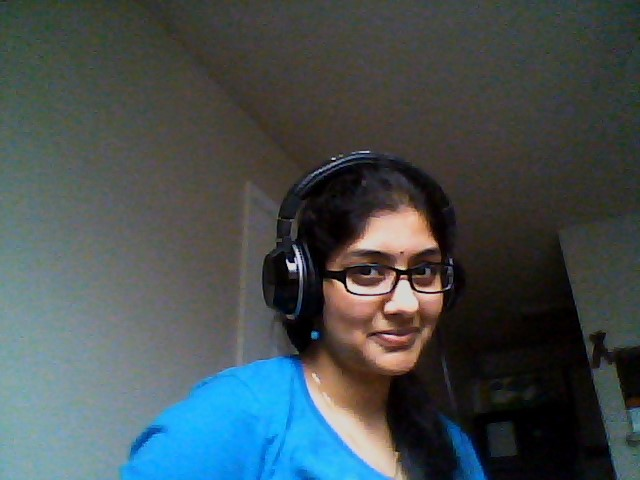

Gayathri N Kannepalli!
 I am from India! I was born and brought up in Hyderabad. I believe that Hyderabad is the best city in the whole world! I strongly feel that I belong to that place. I had experienced a lot in Hyderabad. The best food, the best hangout places and many more! I live close to my cousins and we all hang out together.
I started my schooling at Mothers Integral School and later moved to Sarathi School. I scored 100/100 in Mathematics in my 10th class. I completed my intermediate from Narayana Jr. College with a whopping 94.7% in my academics. I had a choice between Mechanical Engineering at MVSR College of Engineering and Electrical and electronics engineering at JNTU. My penchant towards electronics and gadgets led me to choose EE. I earned my Bachelors from JNTU securing 85% in academics. Later I moved to the United States to pursue my Masters degree in Electrical Engineering at UTD.
My mom, Padma is a homemaker. She completed her Masters in Arts from Osmania University. My dad, Viswanadham is a Central Government Employee who works for the Indian Postal department. I have a younger brother who is pursuing his Bachelors in Chemical Engineering from Osmania University.
I love my parents, my brother and my grandmother a lot! I miss them while I am here.